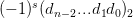
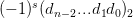
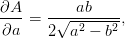

2.6 Condicionamento de um problema
Geralmente podemos pensar um problema como um mapeamento f onde a partir de valores de entrada x devemos encontrar a saída, a solução y, ou seja, f : x → y, ou simplesmente
 |
Entretanto, a entrada do problema x normalmente terá erros (por exemplo, erros na coleta dos dados ou erros na representação dos dados devido a arredondamentos). Assim, ao invés de usar x estamos usando x∗ para resolver o problema e encontrar a solução y∗, ou seja, estamos resolvendo
 |
Estamos interessados em saber se os erros cometidos na entrada Δx = x − x∗ influenciaram na saída do problema Δy = y − y∗.
No caso mais simples, temos que x ∈ ℝ e y ∈ ℝ. Assumindo que f seja diferenciável, a partir da série de Taylor
 |
obtemos (subtraindo f(x) dos dois lados)
 |
Para relacionarmos os erros relativos, dividimos o lado esquerdo por y, o lado direito por f(x) = y e obtemos
 |
sugerindo a definição de número de condicionamento de um problema.
Definição 2.6.1. Seja f uma função diferenciável. O número de condicionamento de um problema é definido como
 |
e fornece uma estimativa de quanto os erros relativos na entrada  serão
amplificados na saída
serão
amplificados na saída  .
.
De modo geral, quando f depende de várias variáveis, podemos obter

Uma matriz de números de condicionamento também poderia ser obtida como em [5].
Exemplo 2.6.1. Considere o problema de calcular  em x = 2. Se usarmos
x∗ = 1,999, quanto será o erro relativo na saída? O erro relativo na entrada
é
em x = 2. Se usarmos
x∗ = 1,999, quanto será o erro relativo na saída? O erro relativo na entrada
é
 |
O número de condicionamento do problema calcular a raiz é
 |
Ou seja, os erros na entrada serão diminuídos pela metade. De fato, usando
y =  = 1,4142136... e y∗ =
= 1,4142136... e y∗ =  = 1,41386..., obtemos
= 1,41386..., obtemos
 |
Exemplo 2.6.2. Considere a função f(x) = e x∗ = 0,9995 com um erro absoluto na entrada de 0,0001.
Calculando y∗ = f(x∗) temos
 |
Mas qual é a estimativa de erro nessa resposta? Quantos dígitos significativos temos nessa resposta?
Sabendo que f′(x) = −10∕(1 − x2)2, o número de condicionamento é
|
|
o que nos fornece para x∗ = 0,9995,
 |
Como o erro relativo na entrada é
|
|
temos que o erro na saída será aproximadamente
 |
ou seja um erro relativo de aproximadamente 19,99%.
Note que se usarmos x1 = 0,9994 e x2 = 0,9996 (ambos no intervalo do erro absoluto da entrada) encontramos
Exemplo 2.6.3. Seja f(x) = x exp(x). Calcule o erro absoluto em se calcular f(x) sabendo que x = 2 ± 0,05.
Solução. Temos que x ≈ 2 com erro absoluto de δx = 0,05. Neste caso, calculamos δf, i.e. o erro absoluto em se calcular f(x), por:
 |
Como f′(x) = (1 + x)ex, temos:
Exemplo 2.6.4. Calcule o erro relativo ao medir f(x,y) =  e2y sabendo
que x ≈ 3 é conhecido com 10% de erro e y ≈ 2 é conhecido com 3% de erro.
e2y sabendo
que x ≈ 3 é conhecido com 10% de erro e y ≈ 2 é conhecido com 3% de erro.
Solução. Calculamos as derivadas parciais de f:


Exemplo 2.6.5. No exemplo anterior, reduza o erro relativo em x pela metade e calcule o erro relativo em f. Depois, repita o processo reduzindo o erro relativo em y pela metade.
Solução. Na primeira situação temos x = 3 com erro relativo de 5% e δx = 0,05 ⋅ 3 = 0,15. Calculamos δf = 7,886399450 e o erro relativo em f de 13%. Na segunda situação, temos y = 2 com erro de 1,5% e δy = 2 ⋅ 0,015 = 0,03. Calculamos δf = 4,853168892 e o erro relativo em f de 8%. Observe que mesma o erro relativo em x sendo maior, o erro em y é mais significante na função. ♢
Exemplo 2.6.6. Considere um triângulo retângulo onde a hipotenusa e um dos catetos são conhecidos a menos de um erro: hipotenusa a = 3 ± 0,01 metros e cateto b = 2 ± 0,01 metros. Calcule o erro absoluto ao calcular a área dessa triângulo.
Solução. Primeiro vamos encontrar a expressão para a área em função da
hipotenusa a e um cateto b. A tamanho de segundo cateto c é dado pelo
teorema de Pitágoras, a2 = b2 + c2, ou seja, c =  . Portanto a área é
. Portanto a área é


 ≈ 0,333%, erro no
cateto de  = 0,5% e erro na área de
≈ 0,333%, erro no
cateto de  = 0,5% e erro na área de
2.6.1 Exercícios
E 2.6.1. Considere que a variável x ≈ 2 é conhecida com um erro relativo de 1% e a variável y ≈ 10 com um erro relativo de 10%. Calcule o erro relativo associado a z quando:
 |
Suponha que você precise conhecer o valor de z com um erro de 0,5%. Como engenheiro, você propõe uma melhoria na medição da variável x ou y? Explique.
Resposta. 2% ♢
E 2.6.2. A corrente I em ampères e a tensão V em volts em uma lâmpada se relacionam conforme a seguinte expressão:
 |
onde α é um número entre 0 e 1 e V 0 é tensão nominal em volts. Sabendo que
V 0 = 220 ± 3% e α = −,8 ± 4%, calcule a corrente e o erro relativo associado
quando a tensão vale 220 ± 1%.
Obs:. Este problema pode ser resolvido de duas formas distintas: usando
a expressão aproximada para a propagação de erro e inspecionando os
valores máximos e mínimos que a expressão pode assumir. Pratique os dois
métodos.
Resposta. 3,2% pela aproximação ou 3,4% pela segundo método . ♢
E 2.6.3. A corrente I em ampères e a tensão V em volts em uma lâmpada se relacionam conforme a seguinte expressão:
- IME - UFRGS